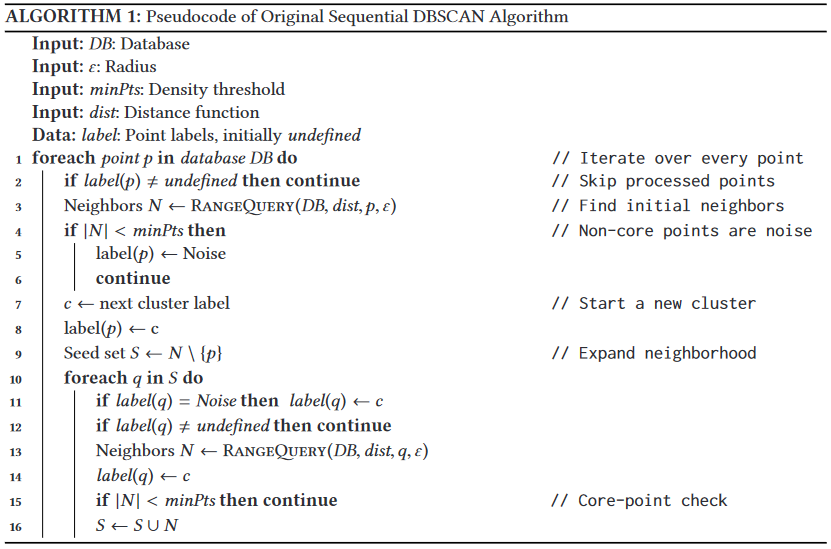

Overview of DBSCAN
DBSCAN it's a specific clustering algorithm, very apropriated to spatial data. It's a non-parametric method that apply the concept of density, which beyond identify clusters, it's also able to recognize noise observations. Thus, all those ideas it's inside their name, Density Based Spatial Clustering of Application with Noise (DBSCAN), which classifies it as a density-based clustering non-parametric algorithm.
In a certain way, the algorith try mimic the human hability of recognize groups of points which are close to each other and points which are distant be considered out of the group.
Figure 01 - Spatial Data example from the First Paper of DBSCAN
This way we could identify points inside a density/cluster and points which isn't in any density cluster, called noises.
The user choose the hyperparameters min_points and ϵ, which correspond to the minimum points necessary for a observation be considered a core-point and the radius which every point will calculate the other points who surround them, respectively.
Logic of DBSCAN
The algorithm uses two important data structures in your code structure:
- FIFO queue
To keep track of the points which are already labelled.
- KDTree (binary tree)
Used to make the continuous search of density points in a tree structure. That search feed and use the FIFO queue and this structure make the code be very performatic by using the KDTree struct from NearestNeighbors.jl package.
The algorithm sets as a core-point , points which has more than min_points neighbours within this radius ϵ. All the points inside this radius distance it's part of the same cluster (same density). Points with less than min_points neighbours could be labelled as:
- Noise
Because doesn't touchs any point already labelled as cluster.
- Border point
Because touchs at least one labelled point, which will also be labelled as the point touched.
The distance used in this implementation to calculate the point's neighbours is the euclidian distance. In the code, this search for neighbors it's refered as the RangeQuery function and that function it's the most crucial part of the algorithm in question of performancing. Because of that search we incorporate the KDTree structure, cited before, already implemented in
NearestNeighbours.jl.
Figure 02 - Ilustration of DBSCAN from this Paper
Pseudocode
We got inspired by this pseudo-code presented in the Paper "DBSCAN Revisited". Here, the reader could get a overview of the steps of the code.
A cool visualization that explain the algorithm
Now, I need to share with the world this amazing website created by Naftali Harris, from this detailed post about DBSCAN. I crop a gif from this interactive visualization because this way I hope would be easier for the reader connect all the information broughted above.

Benchmarking code
using ClusterAnalysis, DataFrames, CSV, BenchmarkTools
# load blob dataset
df = CSV.read("algo_overview/blob_data.csv", DataFrame, drop=[1]);
X = df[:,1:2];
y = df[:,end];
# parameters of k-means
ϵ = 0.35;
min_pts = 10;
# benchmarking algorithm
@benchmark m = dbscan(X, ϵ, min_pts)Scikit-Learn with C in backend

R with C++ in backend
Machine settings used in benchmarking Processor: Intel(R) Core(TM) i5-7200U CPU @ 2.50GHz 2.71 GHz RAM: 8,00 GB
DBSCAN Results
using Plots, StatsPlots
m = dbscan(X, ϵ, min_pts);
scatter(X[:,1], X[:,2], zcolor=m.labels,
leg=false,
title="DBSCAN prediction\n(ϵ=$(ϵ), minPts=$(min_pts))")
DBSCAN Struct
struct DBSCAN{T<:AbstractFloat, KD<:KDTree}
df::Matrix{T}
ϵ::T
min_pts::Int
labels::Vector{Int}
tree::KD
clusters::Vector{Vector{Int}}
# Internal Constructor
function DBSCAN(df::Matrix{T}, ϵ::T, min_pts::Int) where {T<:AbstractFloat}
labels = fill(-1, size(df,1))
tree = KDTree(df', leafsize=20)
clusters = Vector{Vector{Int}}()
KD = typeof(tree)
new{T, KD}(df, ϵ, min_pts, labels, tree, clusters)
end
end